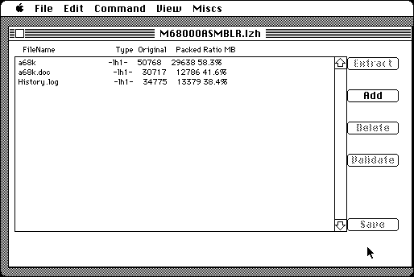

Download
MacLHA_2.24.zip (127K) MacLHA 2.24 repackaged into a zipped hfs disk image and checksum file. The disk image can be mounted with Mini vMac.
MacLHA_2.24.sea.hqx (197K) MacLHA 2.24 in the original format.
copyright: Kazuaki Ishizaki
mod date: Jul 31, 2000
license: Freeware
from url :
MacLHA software
Encodes and Decodes LHA archives (with extension '.lzh'). LHA is the standard archive format of Amiga computers. Though the web page is in Japanese, the program and documentation are available in English (more or less).

If you find these downloads useful, please consider helping the Gryphel Project, which hosts them.
Here are the md5 checksums for the downloads, signed with Gryphel Key 5:
--------- GRY SIGNED TEXT --------- bf2de8cca1e27b3b426774ef5390dc19 MacLHA_2.24.zip 2675dd4346662460d111ec86ba71bc80 MacLHA_2.24.sea.hqx ------- BEGIN GRY SIGNATURE ------- Gry/4Xa8CFcUzxdN/CLcMc2Ejg0da3Dz2GBeJqFuX4MAcsXBcq8SZ23b4s0iZqLf R7YkaY5xes04vqmE/Q0vfflmQYnnHXet+MlnWPpOYyDDxwtjjngUsFmzy3HAkvHy SadHS1Z6wQJEaRYN/IAmJro07FiHmFpu9qElHKvq8eMioQzWyGxn9BtS6gAKq8Ro -------- END GRY SIGNATURE --------